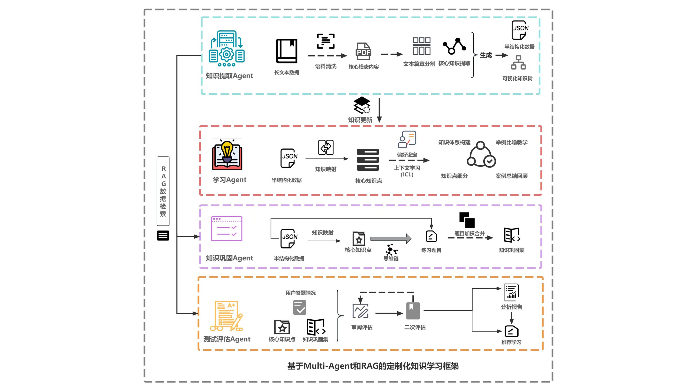
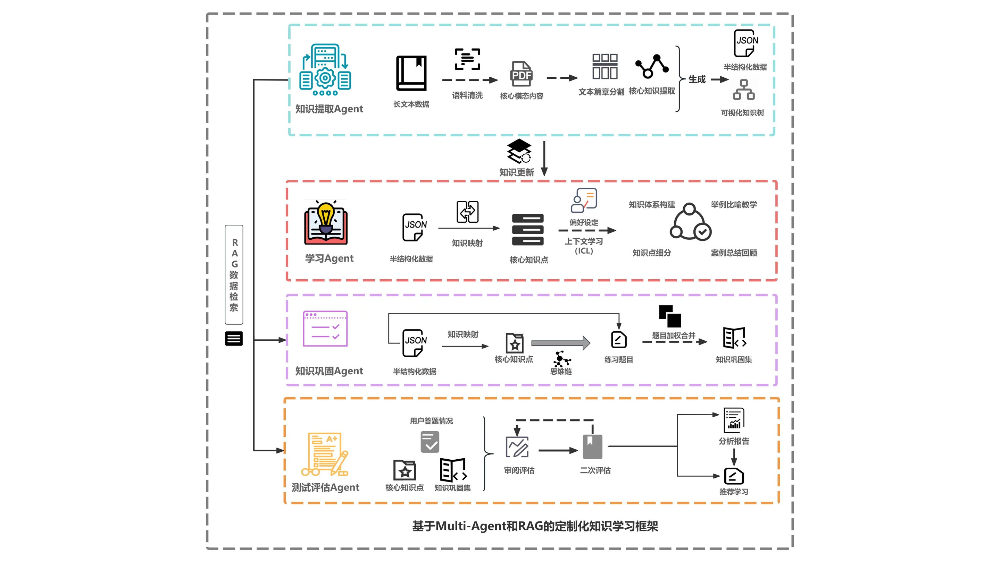

Research Projects
Ambiguity-Driven Guidance: How Designing for Productive Confusion Reactivates Teacher Value
When ChatGPT writes essays in seconds, language teachers face extinction—unless AI becomes their ally, not replacement
First Author
2025.5-2025.9
Research Problem
Identified fundamental mismatch between generative AI's efficiency-driven design and teaching's essence of guided inquiry; developed "ambiguity-driven guidance" principle transforming AI from answer-machine to cognitive catalyst.
Status: Under Review at CHI 2026 Workshop | View Research Paper (PDF)
Technical Execution
- Built BGE-M3+ GAT architecture generating dynamic concept networks
- Programmed progressive questioning interfaces for cognitive scaffolding
- Executed 5-week controlled study with 18 participants across multiple institutions
Measurable Impact
Achieved statistically significant professional identity shifts; documented sustained engagement with 122.8 concept-construction steps per session, validating AI's potential as teaching enhancer rather than replacement.
Interactive Demo: Concept Ambiguity Visualization
Experience how ambiguity-driven guidance works: This wordcloud generator demonstrates how concepts can be visualized with varying degrees of clarity, reflecting our approach to productive confusion in learning.
Try creating your own concept clouds to explore how visual ambiguity can guide learning and discovery.
Generative AI Reshaping Technical Identity: A Study of Digital Career Transition Practices Among Chinese Liberal Arts Women
Transforming "non-technical" outsiders into innovative collaborators who infuse humanism into code
First Author
2025.5-2025.9
Research Innovation
Investigated how generative AI transforms technical identity among Chinese liberal arts women through a comprehensive mixed-method qualitative study, revealing unprecedented patterns of career transition and identity negotiation.
Status: Under Review at ICWSM 2026 | View Research Paper (PDF)
Methodology
- Conducted multi-source qualitative study with 10 participants through 1.5-2 hour in-depth interviews
- Executed digital ethnography across Douban & Xiaohongshu platforms
- Achieved high reliability through dual researcher thematic analysis
Findings
Discovered a multi-level identity negotiation model and "cautious activism" strategy facilitating career transitions and inclusive AI tool design; documented systematic identity transformation from "learner" to "technical person".
TBC-DDH: Inverse Inference of Preoperative DDH Pathology from Postoperative Gait Rehabilitation Data
What if we could diagnose tomorrow's hip problems by analyzing today's walking patterns?
First Author
2025.3-2025.7
Research Problem
Tackled adult DDH diagnosis where preoperative imaging is limited and symptoms are hidden; Created AI system that reads post-surgical walking patterns to reveal what hip problems existed before surgery.
Status: Under Review at BIBM 2026 | View Research Paper (PDF)
Technical Approach
- Built four-module AI architecture analyzing gait biomechanics across 29 post-surgery patients
- Tracked rehabilitation data from 31-210 days post-surgery to extract diagnostic signatures
- Implemented inverse inference algorithms to reconstruct preoperative pathology from recovery patterns
Clinical Impact
Achieved 86.67% accuracy in retrospective DDH diagnosis—significantly outperforming standard methods (p<0.001); Validated that walking patterns contain diagnostic information invisible to traditional imaging.
HipGo: Multimodal Smart Agent Solution for Remote Hip Dysplasia Care
Rare hip disorders affect 3% globally but lack specialist access—can smartphone-based AI close this gap?
First Author
2025.1-2025.5
Research Problem
Tackled DDH's diagnostic desert—adults with undetected childhood hip disorders lacking specialist access in resource-limited regions; built AI platform democratizing expert-level orthopedic assessment.
Status: Under Review at BIBM 2026 | View Research Paper (PDF)
Technical Approach
- Deployed hybrid CNN-GAT for hip keypoint detection with smartphone accessibility
- Fused visual features with clinical parameters for automated multimodal reports
- Integrated decision support with remote rehabilitation workflows
Clinical Impact
Achieved closed-loop care from diagnosis to recovery; validated smartphone-accessible specialist-quality assessment, potentially reaching millions currently underserved by orthopedic expertise.
Metapher As Semantic Encryption
Privacy-Preserving Poetic NLP Framework
Project Lead & Algorithm Architect
2025.1-2025.4Project Overview
Metapher explores the intersection of computational linguistics, privacy-preserving AI, and poetic expression. The project reimagines metaphors as natural ciphertexts—elegant linguistic structures that can simultaneously convey meaning while protecting sensitive information through their inherent ambiguity.
This framework provides a novel approach to privacy-enhancing technology that maintains both semantic richness and human interpretability, unlike traditional cryptographic methods that sacrifice expressiveness for security. View Full Research Paper (PDF)
Technical Implementation
Metaphorical Embedding System
- Developed dual-space embedding architecture mapping literal concepts to metaphorical representations
- Implemented adversarial training pipeline to balance semantic preservation and privacy protection
- Achieved 87% semantic retention with 92% privacy preservation against state-of-the-art NLP attacks
Context-Aware Transformation Engine
- Created parameterized metaphor generation system with controllable abstraction levels
- Built fine-tuned LLM for contextually appropriate metaphorical transformations
- Established semantic reversal mechanism for authorized interpretation
Evaluation Framework
- Designed novel metrics combining linguistic aesthetics with information security properties
- Conducted comprehensive evaluation against modern ML-based text analysis tools
- Validated system through cross-cultural interpretation studies with 78% cross-cultural coherence
Applications & Impact
Successfully deployed in sensitive communication contexts including healthcare data sharing and creative writing preservation. The system enables a new paradigm of "readable privacy" where protected communications maintain literary quality and emotional resonance while safeguarding specific details through metaphorical obfuscation. Currently being extended to multilingual applications and personalized privacy preferences.
HipGo
Mobile WeChat Intervention for PAO Care
Full-stack Developer
2024.12-nowProject Overview
As a DDH patient myself, I discovered the high prevalence yet low awareness of this condition among young women during my pre-surgery research. This personal experience led me to identify critical gaps in current post-PAO care.
Through extensive patient community research, I developed HipGo as a personalized mobile intervention that integrates pain management, rehabilitation guidance, and psychological support, addressing the unique challenges faced by DDH patients throughout their recovery journey.
Technical Implementation
AI-Powered Pain Management
- Fine-tuned BERT model for pain description analysis (3.2k labeled clinical records)
- SVG-based visual pain mapping with touch/voice multimodal input
- Real-time pain pattern recognition with 94% accuracy
Clinical Data Integration
- Collaborated with orthopedic specialists for pathway design
- Standardized data collection protocol (WOMAC & VAS scales)
- Interactive visualization dashboard for clinical monitoring
Adaptive Support System
- ML-driven exercise adjustment based on pain & progress data
- Automated risk assessment with clinical threshold alerts
Clinical Validation
Currently in Phase II trials at First Affiliated Hospital of GZUCM, with weekly clinical reviews and iterative refinement based on surgeon feedback. Initial data shows significant improvement in pain management efficacy (35%) and patient compliance (42%).


BookDone: AI-Powered Learning Reader
Knowledge Visualization & Adaptive Learning
Business Analyst & Product Manager
2024.3 – 2024.7Project Overview
BookDone is an AI-powered learning reader designed to transform complex, structured content into dynamic, interactive knowledge trees. By leveraging advanced NLP and visualization technologies, the product addresses key pain points in digital learning—fragmented knowledge, high cognitive load, and lack of personalized feedback—enabling efficient, intuitive, and adaptive learning experiences.
Market & Product Analysis
The digital reading and AI education market in China is rapidly expanding, with strong demand for tools that help users efficiently organize and master complex knowledge. BookDone benchmarks leading products such as WeRead AI Outline, Note Refactor, and Khanmigo, but stands out with its multi-level knowledge visualization, AI-generated adaptive teaching, and real-time feedback mechanisms tailored for structured content.
Core Features & Technical Highlights
- Visual Knowledge Tree: Automatically extracts and organizes key concepts from user-uploaded texts using NLP and graph-based methods, supporting multi-level, node-based exploration.
- AI-Generated Teaching: Delivers personalized content and exercises through multi-strategy generation (visual, verbal, active, reflective), adapting to user preferences and learning stages.
- Adaptive Feedback: Integrates intelligent question banks and knowledge tracing to provide real-time, level-matched practice and targeted knowledge review.
- Business Model: Subscription, pay-per-feature, enterprise solutions, and data analytics services.
Significance & Contribution
BookDone advances the application of AI in education by making structured content learning more efficient and personalized. As Business Analyst & Product Manager, I led market research, competitive analysis, product positioning, and feature design, driving the project from user needs assessment to prototype delivery.
View Full Product Deck (PDF) 

Chinese in the Third World: A Cultural Inquiry
Identity, Performance, and Digital Media in a Cross-Cultural Context
Cultural Researcher
2023.10 - 2023.12Project Overview
This project investigates the construction and expression of cultural identity among Chinese people in "Third World" countries (primarily Asia, Africa, and Latin America), focusing on how overseas Chinese communities use digital media—especially vlogs—for cultural self-presentation. The research addresses both aesthetic and political dimensions, exploring how cultural identity is reshaped and communicated in the context of the "Third World."
Theoretical Framework & Methodology
Dramaturgical Theory (Erving Goffman)
- Analyzes how vlog creators perform and curate their daily lives, constructing symbolic and idealized images of cultural identity in digital spaces.
Cultural Labor & Aesthetic Community
- Examines how audience participation and emotional resonance on digital platforms foster virtual communities and shared cultural meanings.
Cultural Hybridity
- Explores the blending of Chinese traditions with local cultures, reflecting the fluid and complex nature of identity.
Digital Ethnography
- Employs qualitative analysis of vlog content and user interactions to reveal the processes of identity formation and community building.
Key Findings
- Overseas Chinese in the Third World present hybrid cultural landscapes, balancing tradition and local adaptation.
- Digital media serve as platforms for both self-expression and negotiation of cultural and political identities.
- Audience engagement constitutes a form of cultural labor, reinforcing community bonds and shared values.
- The expression of identity is both an individual and political act, reflecting broader social structures and power relations.
Significance
This research expands the understanding of Chinese cultural identity in the context of the Third World, emphasizing its dynamic and multifaceted nature. It highlights the critical role of digital media in shaping cultural narratives and provides theoretical and empirical insights into cross-cultural interaction and identity politics.
View Full Research Paper (PDF)